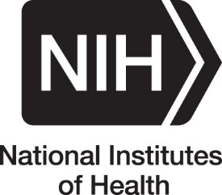
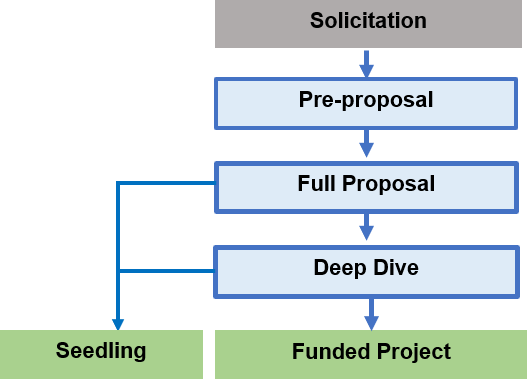

Innovators developing groundbreaking medical device technologies face several challenges along the translational path from bench to bedside. The NIH Blueprint MedTech: Incubator Hubs aim to address such challenges by accelerating the development of cutting-edge medical devices to diagnose and treat disorders of the nervous system. This program will catalyze the translation of novel neurotechnologies from early-stage development to a human-grade prototype ready for first-in-human-testing and will provide: (a) non-dilutive funds to support medical device development activities led by investigators, (b) ongoing, specialized support from experienced executive mentors and (c) additional resources and support services including, but not limited to:
The Center for Innovative NeuroTech Advancement (CINTA) and NeuroTech Harbor (NTH) are two NIH-funded incubator Hubs that will provide direct funding and in-kind resources to innovator teams. The objective of Hub support is to develop and de-risk these groundbreaking technologies to the point where additional investments are warranted from industry partners, investors, and government. By the conclusion of CINTA or NTH funding, it is anticipated that all projects will have non-governmental funding secured or be ready for entry into the companion solicitations from NIH:
CINTA and NTH seek groundbreaking collaborative projects to improve the diagnosis and treatment of disorders of the nervous system or their sequelae. The technologies proposed in applications must have a pathway to a prototype ready for first-in-human testing within 4 years. If successful, projects should be viable candidates for commercial development or have a viable and sustainable financial plan for rare disorders.
Awards from NTH or CINTA will rarely exceed $500,000 in direct costs per year for a period of up to 4 years. In addition to monetary support, awardees will receive ongoing, specialized support from mentors experienced in commercializing medical devices. Awardees will work with their individual mentor for several hours each week to focus on business, regulatory, clinical, and technical factors that may impede commercialization.
The Blueprint MedTech Hubs and NIH encourage applications from women, underrepresented racial and ethnic groups, as well as individuals with disabilities.
In response to this solicitation, applicants must submit pre-proposals, which will undergo review by CINTA, NTH, and NIH program scientific staff. Pre-proposals are submitted through a simple online application form equivalent to approximately 4 pages.
A subset of the applicants who submit pre-proposals will be selected to submit full proposals which are submitted through the same online application system. The online full proposal form is equivalent to approximately ten pages. A subset of the applicants who submit full proposals will be selected to participate in a “deep dive” evaluation, which is the final stage of review prior to funding decisions.
Another subset of the applicants who submit full proposals will be invited to participate in the companion seedling program and be awarded up to $50,000 total cost. The seedling program is akin to a planning grant that will provide training and mentoring to help applicants refine the intended target product profile and regulatory and reimbursement strategies in order to strengthen subsequent applications to the program.
Principal Investigators (PIs) from academic institutions, industry, and non-profit organizations are invited to apply. Any individual(s) with the skills, knowledge, and resources necessary to carry out the proposed research as the Principal Investigator(s) is (are) invited to work with their organization to develop and submit a proposal.
Applicants should consider avenues to support diversity, equity, inclusion, and accessibility in their proposals. This may be addressed by including team members or collaborators from groups that are traditionally underrepresented in the translational workforce or by considering population factors such as racial and ethnic groups, gender, and disabilities. Proposals that address conditions or clinical indications where current diagnostic or treatment options disproportionately fail to serve underrepresented populations are encouraged.
All pre-proposals, full proposals, and deep dive discussions will be conducted on a confidential basis.
September 27, 2022: Pre-proposal submission opens
September - October, 2022: Informational Webinars on 9/29, 10/6, 10/13, and 10/20 & Office hours on 10/7, 10/14, and 10/21
October 24, 2022: Pre-proposal Submission deadline
November 9, 2022: Submission opens for full proposals from selected pre-proposal applicants
December 9, 2022: Full proposal Submission deadline
January 2023: Deep Dive Assessment Phase
February-March 2023 (estimated): Final projects selected by NIH for funding
The above graphic represents the progression of application stages starting from pre-proposal to full proposal. Full proposals may be considered for seedling funding or a deep dive review. The deep dive review may result in recommended projects for NIH funding or for seedling funding consideration. All seedlings will need to re-apply to a future solicitation cycle to be eligible for project funding.
CINTA and NTH are seeking proposals leading to commercialization of groundbreaking therapeutic and/or diagnostic medical devices. At a minimum, projects should have already demonstrated proof-of-concept. Later-stage projects that are nearly ready for first-in-human testing will be redirected to the companion NIH Blueprint MedTech: Translator FOAs.
Applications must focus on a disorder of the nervous system in an area of interest of the Participating Institutes/Centers. Since applications outside the mission of these participating Institutes/Centers will not receive funding, applicants are encouraged to discuss the indication they are targeting with the points of contact listed on the Blueprint MedTech website prior to submitting a pre-proposal.
Applicants must have collaborative teams incorporating product development and clinical expertise. Input from these collaborators must be clearly reflected throughout the application and proposed scope of work. CINTA and NTH can assist in connecting potential applicants with potential collaborators, if requested.
For Frequently Asked Questions please click https://blueprintneurotech.org/faqs.
To sign up for upcoming webinars on September 29th, October 6th, October 13th, and October 20th at 2:00pm ET please click here.
To schedule time for office hours with program staff on October 7th, 14th, and 21st at 2:00pm ET please click here.
Please contact info@blueprintneurotech.org if you have any questions about the program.
The next solicitation is expected to be announced in early March 2023.
CINTA is a program of the Consortia for Improving Medicine with Innovation and Technology (CIMIT), a non-profit consortium of teaching hospitals and universities with strategic international affiliations and government partnerships. The mission of CIMIT is to accelerate the healthcare innovation cycle by facilitating collaboration among experts through the development and implementation of novel solutions to improve patient care. CIMIT has created a national “center-without-walls” for rapid transformation of emerging technologies into commercially viable, clinically focused solutions for improving health care.
NeuroTech Harbor’s mission is to support the development of real-world solutions to alleviate human suffering from neurological conditions. This is made possible through a partnership between Johns Hopkins University and Howard University, and a new NIH Initiative that commits to Equitech-based values of inclusivity, equity and accessibility in all its endeavors.
The NIH Blueprint for Neuroscience Research aims to accelerate transformative discoveries in brain function in health, aging, and disease. Blueprint is a collaborative framework that includes the NIH Office of the Director together with NIH Institutes and Centers that support research on the nervous system. By pooling resources and expertise, Blueprint identifies cross-cutting areas of research and confronts challenges too large for any single Institute or Center.
Participating Organizations are the National Institute of Biomedical Imaging and Bioengineering (NIBIB), National Center for Complementary and Integrative Health (NCCIH), National Eye Institute (NEI), National Institute on Aging (NIA), National Institute on Alcohol Abuse and Alcoholism (NIAAA), Eunice Kennedy Shriver National Institute of Child Health and Human Development (NICHD), National Institute on Drug Abuse (NIDA), National Institute of Dental and Craniofacial Research (NIDCR), National Institute of Mental Health (NIMH), National Institute of Neurological Disorders and Stroke (NINDS), and Office of Behavioral and Social Sciences Research (OBSSR).
The Brain Research through Advancing Innovative Neurotechnologies (BRAIN) Initiative is aimed at revolutionizing our understanding of the human brain. By accelerating the development and application of innovative technologies, researchers will be able to produce a new dynamic picture of the brain that, for the first time, will show how individual cells and complex neural circuits interact in both time and space. It is expected that the application of these new tools and technologies will ultimately lead to new ways to treat and prevent brain disorders.